Meet the philosophers whose ideas changed the way humanity
understands knowledge, ethics, politics, science, and reality.
Why Do These People Matter?
Every idea explored on this site — every
book, every
branch of philosophy, and every
school of thought — traces back to someone
who dared to ask a question no one had asked before. From the thinkers
of Ancient Greece to philosophers across India, China, the Islamic
world, and modern Europe, these are the philosophers whose questions,
arguments, and ideas continue to shape how we understand ourselves and
the world today.
Behind every great civilization, scientific breakthrough, political
revolution, and moral debate lies the influence of philosophical
thought. Philosophers did more than write books—they challenged
traditions, questioned authority, and encouraged humanity to think
beyond accepted beliefs. Their ideas continue to shape how we
understand ourselves, our societies, and the world around us.
The individuals gathered on this website come from diverse cultures
and distant historical periods, yet they share a common pursuit: the
search for wisdom, truth, and an understanding of the world and
ourselves. Their questions have traveled across centuries, surviving
the societies in which they were first asked. They remind us that
philosophy is not merely a record of ideas from the past, but a living
discipline — one that continues to question our assumptions, expand
our understanding, and invite us to think more deeply.
🏛 Ancient Greek Philosophers
🌊 Thales of Miletus
Lived c. 624 BC – c. 546 BC
Thales (Θαλῆς), is widely regarded as the first philosopher in
the Western tradition. Rather than explaining nature through
mythology, he searched for natural causes and believed that
water was the fundamental substance of the universe.
Major Contributions
Founder of Western Philosophy
Natural Philosophy
Scientific Observation
Geometry and Astronomy
"Water is the principle of all things."
— Thales of Miletus
🔺 Pythagoras
Lived c. 570 BC – c. 495 BC
Pythagoras of Samos (Πυθαγόρας), was a pre-Socratic philosopher
and mathematician who founded Pythagoreanism, a movement that
deeply influenced Plato and Aristotle. He is credited with being
the first person to call himself a philosopher ("lover of
wisdom") and established a secretive, ascetic school in Croton,
Italy. His philosophical contributions centered on the belief
that numbers are the fundamental essence of reality, providing
order and harmony to the cosmos and the soul. Key tenets
included the immortality and transmigration of souls
(metempsychosis), ethical vegetarianism, and the integration of
mathematical study with spiritual purification
Major Contributions
Pythagorean Theorem
Mathematics
Harmony of the Universe
Pythagorean School
"Number is the ruler of forms and ideas."
— Pythagoras
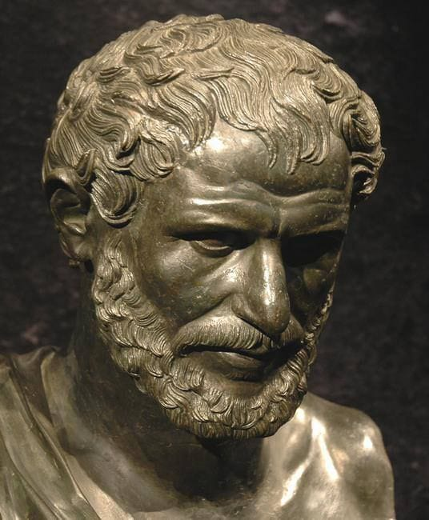
🔥 Heraclitus
Lived c. 540 BC – c. 480 BC
Heraclitus (Ἡράκλειτος,Hērákleitos), of Ephesus was a
Pre-Socratic Greek philosopher renowned for his doctrines of
universal flux and the unity of opposites. He is famously
encapsulated by the aphorism that "no man ever steps in the same
river twice," illustrating his belief that reality is in a
constant state of change.
Major Contributions
Doctrine of Change
Unity of Opposites
Concept of the Logos
Natural Philosophy
"No man ever steps in the same river twice."
— Heraclitus
⚛ Democritus
Lived c. 460 BC – c. 370 BC
Democritus (Δημόκριτος, Dēmókritos), known as the "Laughing
Philosopher" for his emphasis on cheerfulness (euthymia), was a
pre-Socratic Greek philosopher from Abdera who, along with his
teacher Leucippus, founded the school of atomism. He proposed
that the universe consists of indivisible particles called atoms
moving through an infinite void, establishing a materialist
framework where all natural phenomena result from atomic
collisions and arrangements rather than divine intervention
Major Contributions
Atomism
Materialism
Natural Science
Scientific Philosophy
"Nothing exists except atoms and empty space."
— Democritus
Socrates
Lived c. 470 BC – c. 399 BC
Socrates (Σωκράτης,Sōkrátēswas), an ancient Greek philosopher
from Classical Athens, perhaps the first Western moral
philosopher, and a major inspiration on his student Plato, who
largely founded the tradition of Western philosophy.An enigmatic
figure, Socrates authored no texts and is known mainly through
the posthumous accounts of classical writers, particularly his
students Plato and Xenophon. These accounts are written as
dialogues, in which Socrates and his interlocutors examine a
subject in the style of question and answer; they gave rise to
the Socratic dialogue literary genre.
Major Contributions
Socratic Method
Critical Thinking
Ethics
Self-Examination
"The unexamined life is not worth living."
— Socrates
Plato
Lived c. 428 BC – c. 347 BC
Plato (Πλάτων, Plátōn), was an ancient Greek philosopher of
Classical Athens who is most commonly considered the
foundational thinker of the Western philosophical tradition. An
innovator of the literary dialogue and dialectic forms, Plato
influenced all the major areas of theoretical philosophy and
practical philosophy, and was the founder of the Academy, a
philosophical school in Athens where Plato taught the collection
of philosophical theories that would later become known as
Platonism. Plato is a central figure in the history of Western
philosophy. 2,400 years later, Plato's complete works are
believed to have survived—unlike those of nearly all of his
contemporaries.
Major Contributions
The Republic
Theory of Forms
Ideal State
Education
"Knowledge is the food of the soul."
— Plato
Aristotle
Lived 384 BC – 322 BC
Aristotle (Aristotélēs ,Ἀριστοτέλης), was an ancient Greek
philosopher and polymath. His writings span the natural
sciences, philosophy, linguistics, economics, politics,
psychology, and the arts. As the founder of the Peripatetic
school of philosophy in the Lyceum in Athens, he began the wider
Aristotelian tradition that followed, which set the groundwork
for the development of modern science Shortly after Plato died,
Aristotle left Athens and, at the request of Philip II of
Macedon, tutored his son Alexander the Great beginning in 343
BC. He established a library in the Lyceum, which helped him to
produce many of his hundreds of books on papyrus scrolls
Major Contributions
Formal Logic
Virtue Ethics
Biology
Scientific Observation
"Knowing yourself is the beginning of all wisdom."
— Aristotle
🛢 Diogenes of Sinope
Lived c. 412 BC – c. 323 BC
Diogenes (daɪˈɒdʒɪniːz), the Cynic also known as Diogenes of
Sinope, was an ancient Greek philosopher during the period of
Classical Greece, and one of the founders of Cynicism. Renowned
for his ascetic lifestyle and radical critiques of social
conventions, he became a legendary figure whose life and
teachings have been recounted, often through anecdote, in both
antiquity and modernity. Diogenes advocated a return to nature,
the renunciation of wealth, and introduced early ideas of
cosmopolitanism by proclaiming himself a "citizen of the world".
Major Contributions
Founder of Cynicism
Minimalism
Virtuous Living
Criticism of Social Conventions
"The foundation of every state is the education of its youth."
— Diogenes of Sinope
🕉 Indian & Eastern Philosophers
🪷 Gautama Buddha
Lived c. 563 BC – c. 483 BC
Siddhartha Gautama, most commonly referred to as the Buddha (lit
the awakened one') was a wandering ascetic and religious teacher
who lived in the eastern Indo-Gangetic Plains during the 6th or
5th century BCE and founded Buddhism. According to Buddhist
legends, he was born in Lumbini, in what is now Nepal,to royal
parents of the Shakya clan, but renounced his home life to live
as a wandering ascetic. After leading a life of mendicancy,
asceticism, and meditation, he attained nirvana at Bodh Gaya in
what is now Bihar, India. The Buddha then wandered through the
lower Indo-Gangetic Plain, teaching and building a monastic
order (sangha). Buddhist tradition holds he died in Kushinagar
(in modern day Uttar Pradesh, India) and reached parinirvana
("final release from conditioned existence")
Major Contributions
Founder of Buddhism
Four Noble Truths
Noble Eightfold Path
Meditation and Mindfulness
"Peace comes from within. Do not seek it without."
— Gautama Buddha
🦁 Mahavira
Lived 599 BC – 527 BC
Mahavira (Mahāvīra), also known by his birth name Vardhamana
(Vardhamāna), was an Indian religious reformer and spiritual
leader, considered by Jains to be the 24th and final Tirthankara
(Supreme Preacher) in the current time cycle of Jain cosmology.
He is believed by historians to have lived in the 6th or 5th
century BCE, reviving and reforming an earlier Jain or
proto-Jain community which had likely been led by Pārśvanātha,
whom Jains consider to be Mahavira's predecessor. Although the
dates of Mahavira's life are uncertain and historically reliable
information is scarce, and traditional accounts vary by
sectarian traditions, the historicity of Mahavira is
well-established and not in dispute among scholars.
Major Contributions
Jain Philosophy
Ahimsa (Non-violence)
Self-control
Spiritual Liberation
"All living beings long to live. None wishes to suffer."
— Mahavira
📜 Chanakya (Kautilya)
Lived c. 375 BC – c. 283 BC
Chanakya (Cāṇakya, चाणक्य ), according to legendary narratives
preserved in various traditions dating from the 4th to 11th
century CE, was a Brahmin who assisted the first Mauryan emperor
Chandragupta in his rise to power and the establishment of the
Maurya Empire. According to these narratives, Chanakya served as
the chief adviser and prime minister to both emperors
Chandragupta Maurya and his son Bindusara Conventionally,
Chanakya was identified with Kauṭilya and synonymously
Vishnugupta, the author of the ancient Indian politico-economic
treatise Arthashastra
Major Contributions
Arthashastra
Political Philosophy
Economics
Statecraft and Diplomacy
"Education is the best friend. An educated person is respected
everywhere."
— Chanakya (Kautilya)
🕉 Adi Shankaracharya
Lived c. 788 AD – c. 820 AD
Adi Shankara also called Adi Shankaracharya (Sanskrit: आदि
शङ्कर, आदि शङ्कराचार्य, Ādi Śaṅkarācārya), was an Indian Vedic
scholar-monk, philosopher, and teacher (acharya) of Advaita
Vedanta.He wrote influential commentaries on the Brahma sutras
and other texts, and in recent times is often revered as the
most important Indian philosopher. Reliable information on
Shankara's actual life is scant, and the historical influence of
his works on Hindu intellectual thought has been questioned. The
historical Shankara was probably relatively unknown and
Vaishnava-oriented and his true impact lies in the popular
perception of him as a heroic religious leader who
re-established traditional Hinduism. His authentic works present
a harmonizing reading of the shastras, with liberating knowledge
of the self at its core, synthesizing the inherited Advaita
Vedanta teachings of his time. The central concern of Shankara's
writings was the liberating knowledge of the true identity of
jīvātman (individual self) as Ātman-Brahman, emphasizing that
"right knowledge arises at the moment of hearing" the
mahāvākyas, without the need of meditating on them.
Major Contributions
Advaita Vedanta
Commentaries on the Upanishads
Brahma Sutra Bhashya
Spiritual Unity
"Brahman alone is real; the world is an appearance."
— Adi Shankaracharya
🌸 Nagarjuna
Lived c. 150 AD – c. 250 AD
Nāgārjuna (Nāga + Arjuna), was an Indian scholar-monk,
philosopher, and teacher (acharya) of Mahayana Buddhism from
south India. He is considered the founder of the Madhyamaka
(Centrism, Middle Way) school. Nāgārjuna is widely considered to
be the most important Buddhist philosopher after the Buddha
himself. Indeed, in Tibetan Buddhism, he is even called the
"second Buddha".He was a well known defender of the Mahāyāna
movement and his treatises (śāstras) are the foundational texts
of a school of Buddhist philosophy known as the view of
emptiness (Śūnyatāvāda) or Madhyamaka.Nāgārjuna remains a key
figure in all contemporary traditions of Mahāyāna Buddhism, and
his philosophical writings on the doctrine of “emptiness”
(śūnyatā) influenced Indian philosophy for a millennium, as well
as being an indispensable doctrinal source for Mahāyāna doctrine
in East Asian Buddhism and Indo-Tibetan Buddhism.
Major Contributions
Madhyamaka Philosophy
Śūnyatā (Emptiness)
Middle Way
Mahayana Buddhism
"There is not the slightest difference between samsara and
nirvana."
— Nagarjuna
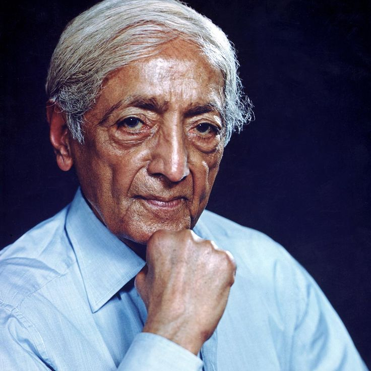
🕊 Jiddu Krishnamurti
Lived 1895 – 1986
Jiddu Krishnamurti (ˈdʒɪduː ˌkrɪʃnəˈmʊərti), was an Indian
spiritual figure, speaker, and writer. Adopted by members of the
Theosophical Society as a child, Krishnamurti was raised to fill
the mantle of the prophesied World Teacher, a role tasked with
aiding humankind's spiritual evolution. In 1922, he began to
suffer from painful, seizure-like mystical episodes that would
produce a lasting change in his perception of reality. In 1929,
he broke from the Theosophy movement and disbanded the Order of
the Star in the East which had been formed around him. He spent
the rest of his life speaking to groups and individuals around
the world, hoping to contribute a radical transformation of
mankind
Major Contributions
Rejected organized religion and spiritual authority
Emphasized self-awareness and direct observation
Explored freedom from fear and psychological conditioning
Inspired modern education through Krishnamurti Schools
"It is no measure of health to be well adjusted to a
profoundly sick society."
— Jiddu Krishnamurti
☯ Chinese Philosophers
☯ Confucius
Lived 551 BC – 479 BC
Confucius born Kong Qiu, was a Chinese philosopher of the Spring
and Autumn period who is traditionally considered the paragon of
Chinese sages. Much of the shared cultural heritage of the
Sinosphere originates in the philosophy and teachings of
Confucius.His philosophical teachings, called Confucianism,
emphasized personal and governmental morality, harmonious social
relationships, righteousness, kindness, sincerity, and a ruler's
responsibilities to lead by virtue.Confucius considered himself
a transmitter for the values of earlier periods which he claimed
had been abandoned in his time.He advocated for filial piety,
endorsing strong family loyalty, ancestor veneration, and the
respect of elders by their children and of husbands by their
wives.
Major Contributions
Confucianism
Ethics and Morality
Education for Everyone
Good Governance
"It does not matter how slowly you go as long as you do not
stop."
— Confucius
🌌 Lao Tzu
Lived Traditionally 6th
Century BC
Laozi (laʊ.ˈtsʌ/, Chinese: 老子;), was a legendary Chinese
philosopher considered to be the author of the Tao Te Ching ,
one of the foundational texts of Taoism. Modern scholarship
generally regards his biographical details as later inventions
and his opus a collaboration of various writers, with the name
Laozi, literally meaning 'Old Master', likely intended to
portray an archaic anonymity that could converse with
Confucianism. Traditional accounts addend him as Li Er, born in
the 6th-century BC state of Chu during China's Spring and Autumn
period. Serving as the royal archivist for the Zhou court at
Wangcheng , he met and impressed Confucius on one occasion,
composing the Dào Dé Jīng in a single session before retiring
into the western wilderness.
Major Contributions
Taoism (Daoism)
Tao Te Ching
Wu Wei (Effortless Action)
Harmony with Nature
"The journey of a thousand miles begins with one step."
— Lao Tzu
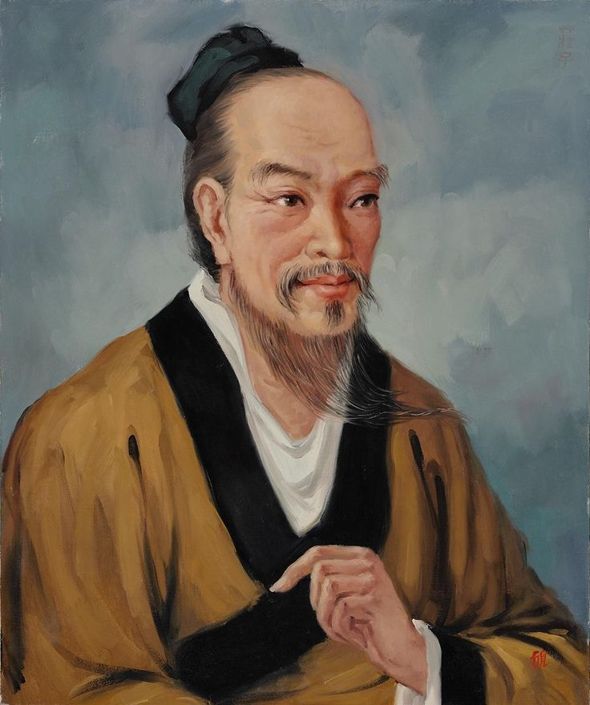
🦋 Zhuangzi
Lived 369 BC – 286 BC
Zhuang Zhou (dʒwɑːŋ ˈdʒoʊ/), honorifically often known as
Zhuangzi (dʒwɑːŋdzʌ/), was an influential Chinese philosopher
who lived around the 4th century BCE during the Warring States
period, a period of great development in Chinese philosophy, the
Hundred Schools of Thought. He is credited with writing—in part
or in whole—a work known by his name, the Zhuangzi, which is one
of two foundational texts of Taoism, alongside the Tao Te
Ching.Zhuangzi expanded Taoist philosophy through stories and
parables. He believed that true wisdom comes from freedom of
thought, simplicity, and living in harmony with the changing
world.
Major Contributions
Taoist Philosophy
Freedom of Mind
Natural Living
Philosophical Parables
"Happiness is the absence of the striving for happiness."
— Zhuangzi
⚖ Mencius
Lived 372 BC – 289 BC
Mencius (孟子, Mèngzǐ), born Meng Ke (孟軻), was a Chinese
Confucian philosopher, often described as the Second Sage to
reflect his traditional esteem relative to Confucius himself. He
was part of Confucius's fourth generation of disciples,
inheriting his ideology and developing it further. Living during
the Warring States period, he is said to have spent much of his
life travelling around the states offering counsel to different
rulers. Conversations with these rulers form the basis of the
Mencius, which would later be canonised as a Confucian classic.
Major Contributions
Development of Confucianism
Human Nature is Good
Benevolent Government
Moral Education
"The great man is he who does not lose his child's heart."
— Mencius
💡 Enlightenment & Modern Philosophers
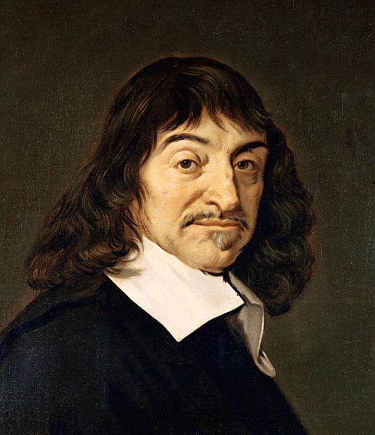
📖 René Descartes
Lived 1596 – 1650
René Descartes [ʁəne dekaʁt], was a French polymath, active
across philosophy, including metaphysics, epistemology, ethics,
and the philosophy of science; theology; mathematics, in which
he connected the previously separate fields of geometry and
algebra into analytic geometry; science, including physics,
optics, mechanics, cosmology, and meteorology; physiology; and
medicine. He has been credited as the father of modern
philosophy, particularly due to his transformation of
methodology by introducing a systematic, method-based approach
to pursuing knowledge.
Major Contributions
Father of Modern Philosophy
Rationalism
Mind–Body Dualism
Analytical Geometry
"I think, therefore I am."
— René Descartes
🔓 John Locke
Lived 1632 – 1704
John Locke (lɒk) was an English philosopher and physician,
widely regarded as one of the most influential of the
Enlightenment thinkers and commonly known as the "father of
liberalism". His important works include A Letter Concerning
Toleration (1689), Two Treatises of Government (1689/90), both
published anonymously, and An Essay Concerning Human
Understanding (1689/90). His writing on toleration contends that
religion is a matter for the individual and that the churches
are voluntary associations, ruling out religious coercion and
uniformity; these lead to the idea of separation of church and
state. His Two Treatises on Government argues for government
based on the consent of the governed and the right to revolt
against tyrannous government which has lost consent. The Two
Treatises are believed to have influenced the language that
Thomas Jefferson chose in his drafting the July 1776 Declaration
of Independence during the War of American Independence.
Major Contributions
Empiricism
Natural Rights
Social Contract
Liberalism
"Where there is no law, there is no freedom."
— John Locke
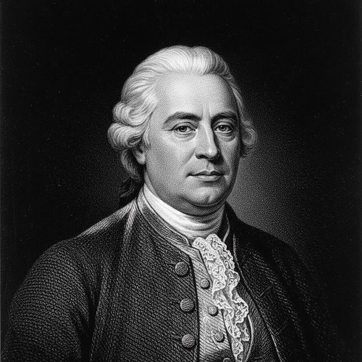
🔍 David Hume
Lived 1711 – 1776
David Hume (hjuːm) was a Scottish philosopher, historian,
economist and essayist who is known for his highly influential
system of empiricism, philosophical scepticism and metaphysical
naturalism. Beginning with A Treatise of Human Nature (1739–40),
Hume strove to create a naturalistic science of man that
examined the psychological basis of human nature. Following John
Locke, Hume rejected the existence of innate ideas, holding that
all our ideas derive ultimately from impressions, but in his
fork he distinguished relations of ideas, known a priori, from
matters of fact, whose knowledge rests on experience. This
places him in the empiricist tradition of Locke and George
Berkeley, while drawing his experimental method from Francis
Bacon.
Major Contributions
Empiricism
Skepticism
Philosophy of Mind
Theory of Causation
"Reason is, and ought only to be, the slave of the passions."
— David Hume
💡 Immanuel Kant
Lived 1724 – 1804
Immanuel Kant was a German philosopher. Born in Königsberg in
the Kingdom of Prussia, he is considered one of the central
thinkers of the Enlightenment. His comprehensive and systematic
works in epistemology, metaphysics, logic, ethics, aesthetics,
political theory, and the philosophy of religion have made him
one of the most influential and highly discussed figures in
modern Western philosophy. Kant's philosophy is centered on the
human subject and motivated by the desire to secure the
possibility of both knowledge and morality against the threats
of skepticism and determinism. In the Critique of Pure Reason
(1781/1787), Kant argues for transcendental idealism, the
doctrine that space and time are mere "forms of intuition"
(German: Anschauung) that structure all experience and that we
have knowledge only of "appearances" and not of the nature of
things in themselves. Kant drew a parallel to the Copernican
Revolution in his proposal to think of the objects of experience
as conforming to people's spatial and temporal forms of
intuition and the categories of the understanding, instead of
the traditional method of showing how the mind might conform to
its objects.
Major Contributions
Critique of Pure Reason
Categorical Imperative
Epistemology
Moral Philosophy
"Sapere aude! Have courage to use your own understanding."
— Immanuel Kant
⚫ Arthur Schopenhauer
Lived 1788 – 1860
Arthur Schopenhauer was a German philosopher and writer. He is
known for his 1818 work The World as Will and Representation
(expanded in 1844), which characterizes the phenomenal world as
the manifestation of a blind and irrational noumenal will.
Building on the transcendental idealism of Immanuel Kant,
Schopenhauer developed an atheistic metaphysical and ethical
system that rejected the contemporaneous ideas of German
idealism. Schopenhauer was among the first philosophers in the
Western tradition to share and affirm significant tenets of
Indian philosophy, such as asceticism, denial of the self, and
the notion of the world-as-appearance
Major Contributions
The World as Will and Representation
Pessimism
Will as Reality
Influence on Existentialism
"Compassion is the basis of morality."
— Arthur Schopenhauer
⚒ Karl Marx
Lived 1818 – 1883
Karl Marx [ˈkaʁl ˈmaʁks], was a German philosopher, social and
political theorist, economist, and revolutionary socialist. He
developed the theory of historical materialism, analyzing class
struggle under capitalism and predicting the system's overthrow
by the proletariat in favour of communism. Marx co-authored The
Communist Manifesto (1848) with Friedrich Engels, and undertook
a critique of classical political economy in his magnum opus,
Das Kapital (1867–1894). Marx's ideas and their subsequent
development, collectively known as Marxism, have had enormous
influence and have influenced revolutions and uprisings in many
countries.Marx's critiques of history, society and political
economy hold that human societies develop through class
conflict. In the capitalist mode of production, this manifests
itself in the conflict between the ruling classes (the
bourgeoisie) that control the means of production and the
working classes (the proletariat) that enable these means by
selling their labour power for wages.
Major Contributions
Historical Materialism
Communism
Critique of Capitalism
Class Struggle
"The philosophers have only interpreted the world; the point
is to change it."
— Karl Marx
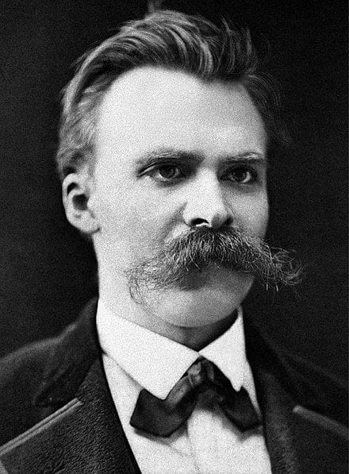
⚡ Friedrich Nietzsche
Lived 1844 – 1900
Friedrich Wilhelm Nietzsche was a German philosopher and writer
who started his career as a classical philologist and turned to
philosophy early in his academic career. In 1869, at age 24, he
was appointed Professor of Classical Philology at the University
of Basel. Plagued by health problems for most of his life, he
resigned from the university in 1879. He afterward lived as an
independent writer, spending much of his life in relative
solitude and financial insecurity while moving between
Switzerland, Italy, and southern France in search of climates
that might alleviate his condition, and in the following decade,
he completed much of his core writing. In 1889, aged 44, he
suffered a neurological collapse, and thereafter a complete loss
of his mental faculties, with paralysis and vascular
dementia;Nietzsche's work encompasses poetry, cultural
criticism, and philosophical essays while displaying a fondness
for aphorisms and irony. Prominent elements of his philosophy
include his critique of objective truth in favour of
perspectivism; a genealogical critique of Christian morality and
a related theory of master–slave morality; the affirmation of
life in response to both the weakening of religion ("God is
dead") and the crisis of passive nihilism which followed it; the
notion of Apollonian and Dionysian duality; and a
characterisation of the human subject as the expression of
competing wills, collectively understood as the will-to-power.
Major Contributions
Will to Power
Übermensch
Critique of Morality
Existential Thought
"He who has a why to live can bear almost any how."
— Friedrich Nietzsche
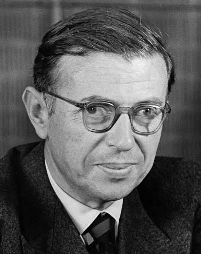
🌍 Jean-Paul Sartre
Lived 1905 – 1980
Jean-Paul Charles Aymard Sartre [saʁtʁ], was a French
philosopher, playwright, novelist, screenwriter, political
activist, biographer, and literary critic, considered a leading
figure in 20th-century French philosophy and Marxism. Sartre was
one of the key figures in the philosophy of existentialism (and
phenomenology) and was a proponent of Libertarian Marxism. His
work has influenced sociology, critical theory, post-colonial
theory, and literary studies. He was awarded the 1964 Nobel
Prize in Literature despite attempting to refuse it, saying that
he always declined official honors and that "a writer should not
allow himself to be turned into an institution".
Major Contributions
Existentialism
Freedom
Responsibility
Phenomenology
"Man is condemned to be free."
— Jean-Paul Sartre
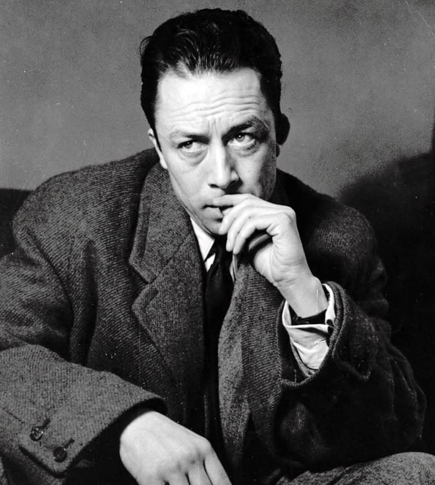
🎭 Albert Camus
Lived 1913 – 1960
Albert Camus [albɛʁ kamy] was a French philosopher, novelist,
author, dramatist, journalist, world federalist, and political
activist. He was the recipient of the 1957 Nobel Prize in
Literature at the age of 44, the second-youngest recipient in
history, and the first laureate in literature born in Africa.
His works include The Stranger, The Plague, The Myth of
Sisyphus, The Fall and The Rebel.Camus was politically active;
he was part of the left that opposed Joseph Stalin and the
Soviet Union because of their totalitarianism. Camus was a
moralist and leaned towards anarcho-syndicalism. He was part of
many organisations seeking European integration. During the
Algerian War (1954–1962), he kept a neutral stance, advocating a
multicultural and pluralistic Algeria, a position that was
rejected by most parties.
Major Contributions
Absurdism
The Myth of Sisyphus
The Stranger
Revolt and Freedom
"The struggle itself toward the heights is enough to fill a
man's heart."
— Albert Camus
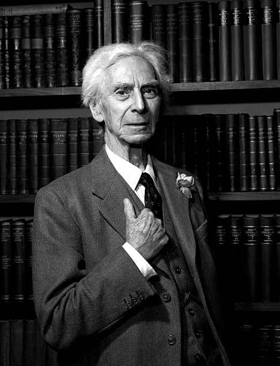
🧠 Bertrand Russell
Lived 1872 – 1970
Russell was born into the prominent Russell family, to the
Viscount and Viscountess Amberley. He was orphaned at the age of
four and moved into Pembroke Lodge to live with his
grandparents, the Earl and Countess Russell. The Earl Russell
had twice been Prime Minister of the United Kingdom (1846–1852;
1865–1866) and died in 1878, leaving Russell in the care of his
grandmother.He was one of the early 20th century's prominent
logicians and a founder of analytic philosophy, along with his
predecessor Gottlob Frege, his friend and colleague G. E. Moore,
and his student and protégé Ludwig Wittgenstein. Russell with
Moore led the British "revolt against idealism". Together with
his former teacher Alfred North Whitehead, Russell wrote
Principia Mathematica, a milestone in the development of
classical logic and a major attempt to reduce the whole of
mathematics to logic (see logicism). Russell's article "On
Denoting" has been considered a "paradigm of philosophy".
Major Contributions
Analytic Philosophy
Mathematical Logic
Philosophy of Language
Pacifism
"The good life is one inspired by love and guided by
knowledge."
— Bertrand Russell
📖 G. W. F. Hegel
Lived 1770 – 1831
Georg Wilhelm Friedrich Hegel was a German philosopher and a
major figure in the tradition of German idealism. His influence
on Western philosophy extends across a wide range of topics—from
metaphysical issues in epistemology and ontology, to political
philosophy, to philosophy of art and philosophy of religion.
Hegel was born in Stuttgart. His life spanned the transitional
period between the Enlightenment and the Romantic movement. His
thought was shaped by the French Revolution and the Napoleonic
wars, events which he interpreted from a philosophical
perspective. His academic career culminated in his appointment
to the chair of philosophy at the University of Berlin, where he
remained a prominent intellectual figure until his death.
Major Contributions
Absolute idealism
Dialectical method
Philosophy of history
"The real is rational and the rational is real."
— G. W. F. Hegel
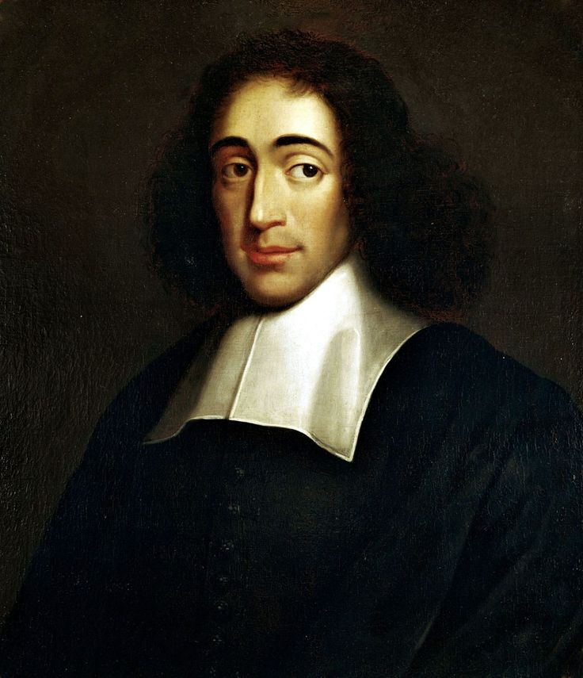
📜Baruch Spinoza
Lived 1632 – 1677
Baruch (de) Spinoza also known under his Latinized pen name
Benedictus de Spinoza, was a philosopher of Portuguese-Jewish
origin who was born and lived in the Dutch Republic. A
forerunner of the Enlightenment, Spinoza significantly
influenced modern biblical criticism, 17th-century rationalism,
and Dutch intellectual culture, establishing himself as one of
the most important and radical philosophers of the early modern
period. Influenced by Stoicism, Thomas Hobbes, René Descartes,
and heterodox Christians, Spinoza was a leading philosopher of
the Dutch Golden Age.
Major Contributions
Ethics in geometric order
Monism (God or Nature)
Rationalist ethics
"The more you struggle to live, the less you live. Give up the
notion that you must be sure of what you are doing."
— Baruch Spinoza
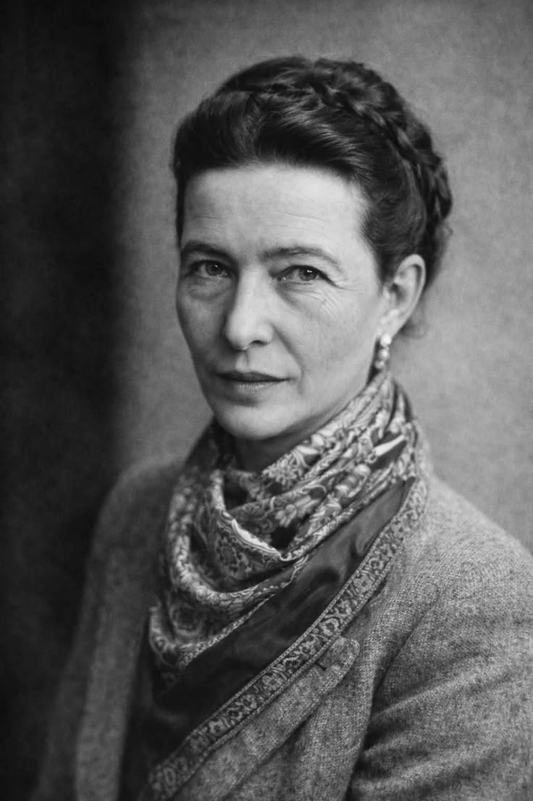
🌸 Simone de Beauvoir
Lived 1908 – 1986
Simone Lucie Ernestine Marie Bertrand de Beauvoir was a French
existentialist philosopher, writer, social theorist, and
feminist activist. Though she did not consider herself a
philosopher, nor was she considered one at the time of her
death, she had a significant influence on both feminist
existentialism and feminist theory. Beauvoir wrote novels,
essays, short stories, biographies, autobiographies, and
monographs on philosophy, politics, and social issues. She was
best known for her "trailblazing work in feminist philosophy",
The Second Sex (1949), a detailed analysis of women's oppression
and a foundational tract of contemporary feminism. She was also
known for her novels, the most famous of which were She Came to
Stay (1943) and The Mandarins (1954).
Major Contributions
Existentialist ethics
Feminist theory — The Second Sex
Phenomenology of freedom and otherness
"One is not born, but rather becomes, a woman."
— Simone de Beauvoir
☪ Islamic Philosophers
☯ Al‑Ghazali
Lived 1058 – 1111
Al-Ghazali (ابو حامد محمد ابن محمد غزالی توسی, Abū Ḥāmid
Muḥammad ibn Muḥammad Ghazālī Ṭūsi ) Latinized as Algazelus, was
a Shafi'i Sunni Muslim Persian scholar and polymath. He is known
as one of the most prominent and influential jurisconsults,
legal theoreticians, muftis, philosophers, theologians,
logicians and mystics in Islamic history. He is considered to be
the 11th century's mujaddid, a renewer of the faith, who,
according to the prophetic hadith, appears once every 100 years
to restore the faith of the Islamic community. Al-Ghazali's
works were so highly acclaimed by his contemporaries that he was
awarded the honorific title "Proof of Islam" (Ḥujjat al-Islām).
Al-Ghazali was a prominent mujtahid in the Shafi'i school of
law. Much of al-Ghazali's work stemmed around his spiritual
crises following his appointment as the head of the Nizamiyya of
Baghdad, which was the most prestigious academic position in the
Muslim world at the time. This led to his eventual disappearance
from the Muslim world for over 10 years, realising he chose the
path of status and ego over God
Major Contributions
Theology and Sufism synthesis
Critique of philosophical overreach
Islamic jurisprudence and ethics
"Knowledge without action is wastefulness and action without
knowledge is foolishness."
— Al‑Ghazali
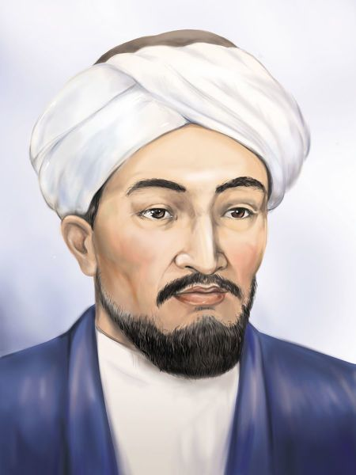
☯ Al‑Farabi
Lived 872 – 950
Abu Nasr Muhammad al-Farabi ( أبو نصر محمد الفارابي, Abū Naṣr
Muḥammad al-Fārābī0) known in the Latin West as Alpharabius, was
an early Islamic philosopher and music theorist. He has been
designated as "Father of Islamic Neoplatonism", and the "Founder
of Islamic Political Philosophy". Al-Farabi's fields of
philosophical interest included—but were not limited
to—philosophy of society and religion; philosophy of language
and logic; psychology and epistemology; metaphysics, political
philosophy, and ethics. He was an expert in both practical
musicianship and music theory, and although he was not
intrinsically a scientist,his works incorporate astronomy,
mathematics,cosmology,and physics. Al-Farabi is credited as the
first Muslim who presented philosophy as a coherent system in
the Islamic world, and created a philosophical system of his
own, which developed a philosophical system that went far beyond
the scholastic interests of his Greco-Roman Neoplatonism and
Syriac Aristotelian precursors. That he was more than a pioneer
in Islamic philosophy is evident from later writers calling him
the "Second Master",with Aristotle as the first.
Major Contributions
Islamic Neoplatonism and Aristotelian synthesis
Political philosophy of the virtuous city
Logic and metaphysics
"Happiness is the perfection of the human soul."
— Al‑Farabi
☯ Avicenna (Ibn Sina)
Lived 980 – 1037
Abu Ali al‑Husayn ibn Abdullah ibn Sina (أبو علي الحسين بن عبد
الله بن سينا), known in the West as Avicenna, was a Persian
polymath who made lasting contributions to medicine, philosophy,
and the sciences. He is best known for his medical encyclopedia
"The Canon of Medicine" (Al‑Qanun fi al‑Tibb), which served as a
standard medical text in both the Islamic world and Europe for
centuries. In philosophy he synthesized Aristotelian thought
with Neoplatonic and Islamic ideas, producing influential works
on metaphysics, logic, and psychology.
Major Contributions
The Canon of Medicine — systematic medical encyclopedia
Metaphysics and the concept of essence and existence
Foundations of early psychology and philosophy of mind
"Medicine is a science from which one learns the states of the
human body with respect to what is beneficial and harmful to
it."
— Avicenna (Ibn Sina)
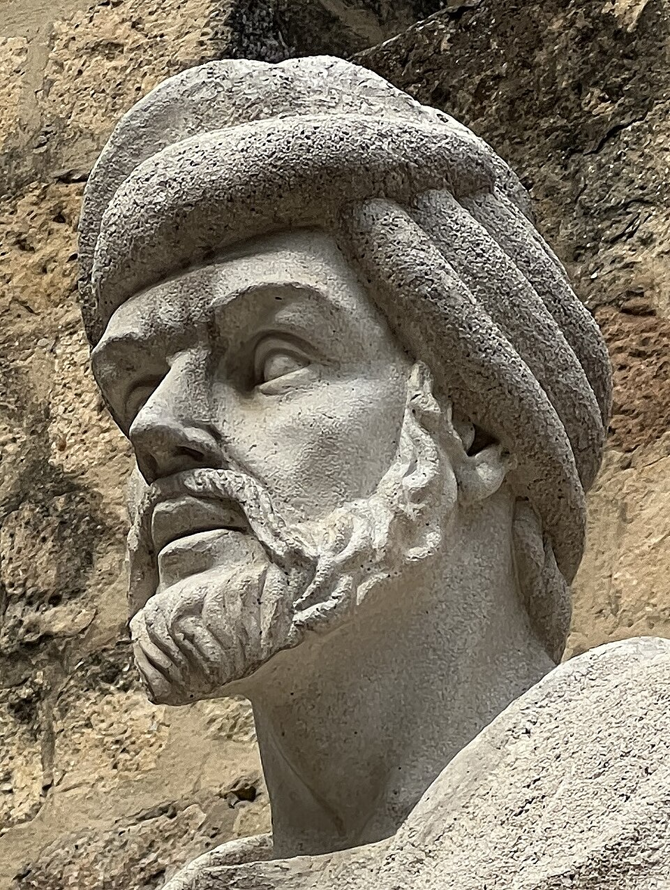
☯ Averroes (Ibn Rushd)
Lived 1126 – 1198
Abu al‑Walid Muhammad ibn Ahmad ibn Rushd (أبو الوليد محمد بن
أحمد بن رشد), known as Averroes in the Latin West and Ibn Rushd
in Arabic, was an Andalusian philosopher, jurist, and physician.
He is celebrated for his extensive commentaries on Aristotle,
which revived Aristotelian philosophy in medieval Europe and
deeply influenced later scholastic thought. Averroes argued for
the compatibility of religion and philosophy, defended rational
inquiry, and wrote on law, medicine, and political theory.
Major Contributions
Authoritative commentaries on Aristotle
Defense of rationalism and the harmony of faith and reason
Works on law, medicine, and political philosophy
"The first duty of a man is to think for himself."
— Averroes (Ibn Rushd)
Think Like a Philosopher
Is lying always wrong?
Do humans truly have free will?
Can machines become conscious?
Is happiness more important than truth?
Can we ever know reality with certainty?
What makes a life meaningful?
Quote of the Page
"Knowing yourself is the beginning of all wisdom."
— Aristotle
Every Great Idea Begins With a Question
Although these philosophers lived centuries apart, each one challenged
humanity to think more deeply about truth, justice, happiness,
knowledge, and existence. Their ideas continue to influence
psychology, politics, science, economics, and artificial intelligence.